Propuesto por Juan Bosco Romero Márquez, profesor colaborador de la Universidad de Valladolid
[1] Sea A* un punto interior de BC en el triángulo ABC. Las bisectrices interiores de loa ángulos BA*A y CA*A intersecan a AB y a AC en D y E respectivamente. Demostrar que AA*, BE y CD son concurrentes.
[2] Por Loeffer: Lugar geométrico del punto de concurrencia si ABC es equilátero.
[3] Por J.B. Romero : Lugar geométrico de los baricentros, circuncentros, ortocentros e incentros de los triángulos A*ED, rectángulos en A* cuando A* varia sobre BC
Solución de José María Pedret, Ingeniero Naval. Esplugues de Llobregat (Barcelona). (16 de octubre de 2005) |
|
INTRODUCCION |
|
Sean r,r’,s,s’ cuatro rectas de un haz A*. En geometría clásica se dice que las rectas s, s’ son bisectrices de las rectas r, r’ si s y s’ son ejes ortogonales de simetría que transforman r en r’.
Si traducimos lo anterior al lenguaje proyectivo y usamos en los necesario el cuerpo C de los complejos, podemos obtener una vía para responder al enunciado.
- Empezaremos por el SEGUNDO TEOREMA de DESARGUES y de él deduciremos el TEOREMA UNO que nos permite hallar rectas y puntos conjugados armónicos por medio de un cuadrivértice.
- Identificamos homografías elípticas de rectas proyectivas reales con SEMEJANZAS DIRECTAS.
- Introducimos, a continuación, la ortogonalidad por medio de la INVOLUCIÓN CANÓNICA y de sus puntos fijos los PUNTOS CICLICOS.
- Caracterizamos las SEMEJANZAS como homografías cuya restricción a la recta de infinito conmuta con la INVOLUCIÓN CANÓNICA.
- A partir de aquí podemos definir ÁNGULO DE DOS RECTAS por medios proyectivos y a su vez concluir con la definición proyectiva de BISECTRICES.
- Acabamos redactando la SOLUCIÓN. |
|
RECURSOS TEORICOS |
|
SEGUNDO TEOREMA DE DESARGUES (Sin demostración)
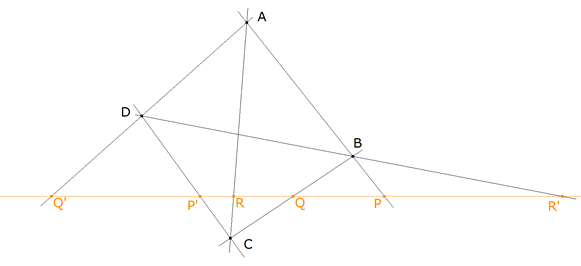 figura 1
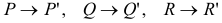
TEOREMA UNO Dos lados del triángulo diagonal de un cuadrivértice son conjugados respecto los lados que pasan por el vértice diagonal correspondiente.
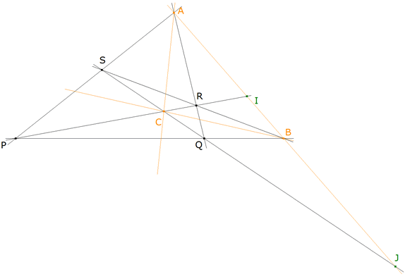 figura 2 DEMOSTRACIÓN UNO
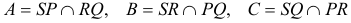 Sean las rectas
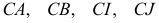 Estas rectas cortan al lado AB en
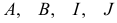 Los puntos A y B son fijos en la involución que sobre AB se define por el SEGUNDO TEOREMA DE DESARGUES e I, J son homólogos en esta involución
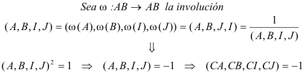 c.q.d.
HOMOGRAFÍAS ELÍPTICAS DE UNA RECTA PROYECTIVA REAL Y LA SEMEJANZA DIRECTA Una homografía
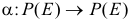 sin puntos fijos es inducida por un isomorfismo
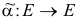
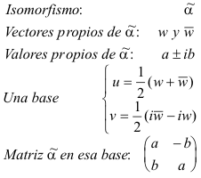 Lo anterior nos demuestra que pasamos de una recta M a otra M’ = α(M) por medio de una semejanza directa.
ORTOGONALIDAD (En el plano proyectivo real)
Para demostrar que dos rectas r y s, de vectores directores u y v respectivamente, son ortogonales, se utilizan principalmente dos métodos
Probar que el producto escalar u·v es nulo. Encontrar una semejanza de ángulo ½π que lleva al vector u sobre el vector v.
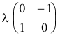
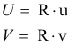
Por lo tanto, podemos decir que dos rectas r y s son ortogonales si y sólo si σ intercambia los puntos de infinito de esas rectas U y V.
Recíprocamente, según el apartado anterior, el dar una involución elíptica σ de la recta del infinito pone de manifiesto una base que define la ortogonalidad que expresamos del siguiente modo
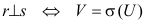
En la práctica, definiremos la ortogonalidad en un plano afín (inmerso en un plano proyectivo) mediante la elección de una involución de la recta del infinito. Esta involución se denomina INVOLUCIÓN CANÓNICA.
Si consideramos la recta del infinito y el cuerpo C de los complejos, la involución canónica σ tiene dos puntos fijos I
y J y por lo tanto como
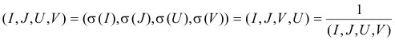 y de aquí al ser puntos distintos
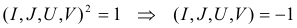 con lo que concluimos que
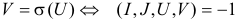 Como los vectores propios de una semejanza de ángulo ½π son(1,i) y (1,-i) las coordenadas homogéneas de I y de J (puntos fijos) son
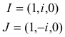
CARACTERZACION DE LAS SEMEJANZAS Sea α una homografía plana que deja invariante el plano excluyendole la recta de infinito (carta afín). α restringida a esa carta afín es una semejanza si la restricción de α a la recta del infinito conmuta con la involución canónica.
Sea la homografía α de matriz
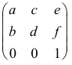
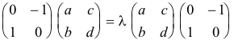
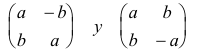
ÁNGULO DE DOS RECTAS. Como el grupo de las semejanzas directas es isomorfo al grupo de los ángulos entre dos rectas podemos definir
Dos pares de rectas r, r’ y s, s’ forman el mismo ángulo si existe una homografía de la recta del infinito que conmute con la involución canónica y que transforme los puntos del infinito de r y s en los de r’ y s’.
BISECTRICES
Sean r,r’,s,s’ cuatro rectas de un haz A*. En geometría clásica se dice que las rectas s, s’ son bisectrices de las rectas r, r’ si s y s’ son ejes ortogonales de simetría que transforman r en r’. Estamos en disposición de escribir su equivalente proyectivo
Se dice que las rectas s y s’ son bisectrices de las rectas, de su mismo haz, r y r’ si las rectas s y s’ son ortogonales y conjugadas respecto a r y r’
|
|
SOLUCIÓN |
|
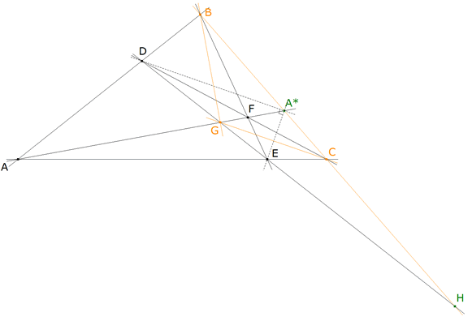 figura 3
Como A*D y A*E se definen como bisectrices de A*B y A*A son ortogonales y conjugadas; partiendo del haz A* podemos escribir
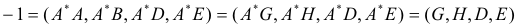
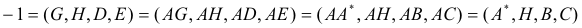 vemos pues que A* y H (intersección de DE y BC) son conjugados armónicos respecto C y B y por lo tanto, recordando el TEOREMA UNO y la figura 2
Como H es el conjugado armónico de A* con respecto a B y C; siendo G = AA* ∩ DE podemos considerar que BCG es el triángulo diagonal del cuadrivértice ADFE siendo
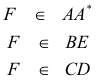 POR LO TANTO AA*, BE Y CD CONCURREN c.q.d. |
|
[2]
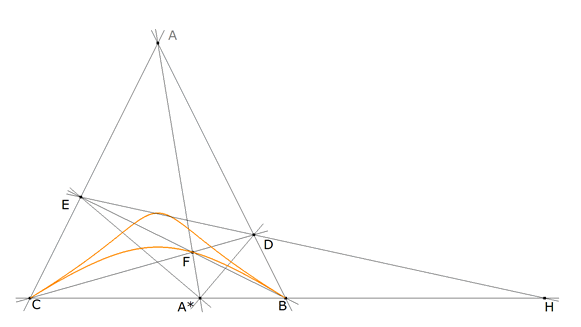 figura 4 Recordemos que el enunciado dice que A* es interior a BC. El lugar geométrico sería sólo la rama inferior. Si la curva fuera una cónica BF y CF serían rectas homográficas ( CHASLES STEINER); pero no lo son porque A* es variable.
|
|
[3]
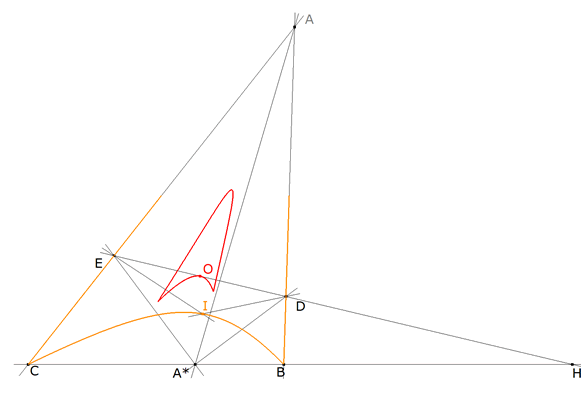 figura 5 Para el lugar del ortocentro, basta darse cuenta que en un triángulo rectángulo el ortocentro es el vértice opuesto a la hipotenusa. El lugar del ortocentro es la recta BC El incentro viene definido por la intersección de las bisectrices de los ángulos A*DE y A*ED. De nuevo como en el caso [3] el lugar no puede ser una cónica. El lugar es una cuártica por B y C. (En naranja en la figura 5)
|